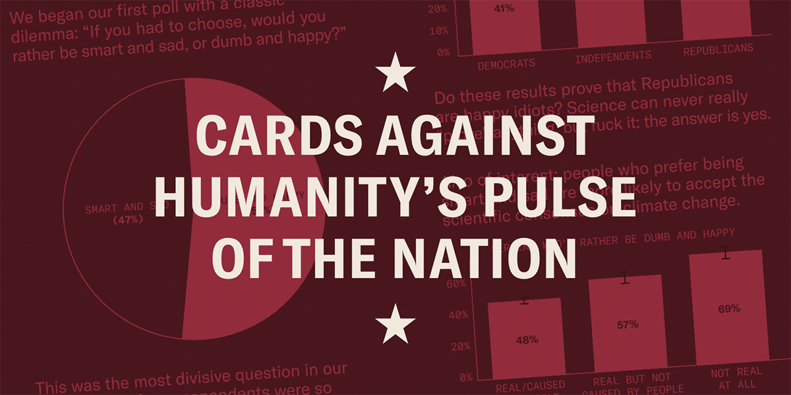

library("bayesrules")
library("bayesplot")
library("ggtext")
library("gt")
library("janitor")
library("rstan")
library("rstanarm")
library("tidyverse")
knitr::opts_chunk$set(echo = TRUE)
data(pulse_of_the_nation)
pulse_df <- pulse_of_the_nation
pulse_df$education <- factor(pulse_df$education,
levels = c("Graduate degree",
"College degree",
"Some college",
"High school",
"Other"))
pulse_df$robots <- factor(pulse_df$robots,
levels = c("Likely", "Unlikely"))
pulse_df$ghosts <- factor(pulse_df$ghosts,
levels = c("Yes", "No"))Logistic Regression
Goal: Use Bayesian approaches to classification tasks
Bayes Rules! Exercise 13.14
Data
source: Pulse of the Nation survey by Cards Against Humanity
Poll 1: September 2017
1000 observations
15 variables

Exploratory Data Analyses
pulse_df |>
ggplot(aes(x = income)) +
geom_density(fill = "green") +
labs(title = "Pulse of the Nation",
subtitle = "Income of participants",
caption = "SML 320",
x = "income (thousands of dollars)",
y = "") +
theme_minimal() +
theme(axis.text.y = element_blank(),
axis.ticks.y = element_blank())pulse_df |>
ggplot(aes(x = age)) +
geom_density(fill = "purple") +
labs(title = "Pulse of the Nation",
subtitle = "Age of participants",
caption = "SML 320",
x = "age",
y = "") +
theme_minimal() +
theme(axis.text.y = element_blank(),
axis.ticks.y = element_blank())pulse_df |>
ggplot(aes(x = education, fill = education)) +
geom_bar(stat = "count") +
labs(title = "Pulse of the Nation",
subtitle = "Education attainment of participants",
caption = "SML 320",
x = "education",
y = "count") +
theme_minimal() +
theme(legend.position = "none")pulse_df |>
ggplot(aes(x = robots, fill = robots)) +
geom_bar(stat = "count") +
labs(title = "Pulse of the Nation",
subtitle = "Is it likely that robots would take your jobs within the next decade",
caption = "September 2017",
x = "",
y = "count") +
theme_minimal() +
theme(legend.position = "none")pulse_df |>
ggplot(aes(x = ghosts, fill = ghosts)) +
geom_bar(stat = "count") +
labs(title = "Pulse of the Nation",
subtitle = "Do you believe in ghosts?",
caption = "September 2017",
x = "",
y = "count") +
theme_minimal() +
theme(legend.position = "none")Variables
Response Variable
\(Y\): ghosts
- binary variable: did the survey participant believe in ghosts?
Prediction
What percentage of 21-year-olds who make $75,000 believe in ghosts?
Predictor Variables
- \(X_{1}\):
income - \(X_{2}\):
age - \(X_{3}\):
education - \(X_{4}\):
robots
Odds
The notion of odds is related to probability. If we have a probability computed with a value of \(\pi\), then the odds are
\[\text{odds} = \frac{\pi}{1 - \pi}\]
- \(\pi \in [0,1]\)
- odds \(\in [0 \infty)\)
The observed probability (scaled frequency) of believing in ghosts is 37.9 percent.
pulse_df |>
janitor::tabyl(ghosts) |>
janitor::adorn_totals() ghosts n percent
Yes 379 0.379
No 621 0.621
Total 1000 1.000Compute the odds of believing in ghosts.
\[\text{odds} = \frac{\pi}{1 - \pi} = \frac{0.379}{1 - 0.379} = 0.610\] The odds of believing in ghosts are 379 to 621.
If we know the odds of an event, the associated probability is
\[\pi = \frac{\text{odds}}{1 + \text{odds}}\]
Among the participants with a college degree, the odds of believing in ghosts was 45 to 268. What was the probability of randomly selecting a person in that set that believed in ghosts?
\[\pi = \frac{\text{odds}}{1 + \text{odds}} = \frac{\frac{45}{268}}{1 + \frac{45}{268}} \approx 0.1438\]
pulse_df |>
filter(education == "College degree") |>
janitor::tabyl(robots) |>
janitor::adorn_totals() robots n percent
Likely 45 0.14377
Unlikely 268 0.85623
Total 313 1.00000Logistic Model
\[Y_{i} | \beta_{0}, \beta_{1} \sim \text{Bern}(\pi_{i}) \quad\text{with}\quad \ln\left(\frac{\pi_{i}}{1 - \pi_{i}}\right) = \beta_{0} + \beta_{1}X_{i1} ...\]
\[\frac{\pi_{i}}{1 - \pi_{i}} = e^{\beta_{0} + \beta_{1}X_{i1}} \quad\text{and}\quad \pi_{i} = \frac{e^{\beta_{0} + \beta_{1}X_{i1}}}{1 + e^{\beta_{0} + \beta_{1}X_{i1}}}\]
pulse_df |>
ggplot(aes(x = age, y = income, color = ghosts)) +
geom_point() +
labs(title = "Pulse of the Nation",
subtitle = "Do you believe in ghosts?",
caption = "September 2017",
x = "age",
y = "income") +
theme_minimal()log_reg_mod_1 <- rstanarm::stan_glm(
formula = ghosts ~ income + age,
data = pulse_df,
family = binomial, #changed here
chains = 4, iter = 5000*2, refresh = 0, seed = 320)
Function
model_diagnostics <- function(the_stan_model){
p1 <- bayesplot::mcmc_trace(the_stan_model, size = 0.1) +
labs(title = "MCMC Traces")
print(p1)
p2 <- bayesplot::mcmc_dens_overlay(the_stan_model) +
labs(title = "Density Plots")
print(p2)
p3 <- bayesplot::mcmc_acf(the_stan_model) +
labs(title = "Autocorrelations")
print(p3)
# effective sample size
print("Effective Sample Size:")
print(bayesplot::neff_ratio(the_stan_model))
# split-R metric
print("R-Hat")
print(bayesplot::rhat(the_stan_model))
}model_diagnostics(log_reg_mod_1)[1] "Effective Sample Size:"
(Intercept) income age
0.94680 0.99060 0.94225
[1] "R-Hat"
(Intercept) income age
0.9998781 0.9998473 0.9999707 broom.mixed::tidy(log_reg_mod_1,
conf.int = TRUE, conf.level = 0.90) |>
mutate_if(is.numeric, round, digits = 4)# A tibble: 3 × 5
term estimate std.error conf.low conf.high
<chr> <dbl> <dbl> <dbl> <dbl>
1 (Intercept) -0.142 0.240 -0.536 0.26
2 income 0.0021 0.0012 0.0001 0.0041
3 age 0.0091 0.004 0.0026 0.0157Interpretation
\[\ln(\text{odds})=\ln\left(\frac{\pi}{1 - \pi}\right)=\beta_{0}+\beta_{1}X_{1}+\cdots+\beta_{p}X_{p}\]
- intercept: \(\beta_{0}\) is the log odds, \(e^{\beta_{0}}\) is the odds
\[\beta_{i} = \ln(\text{odds}_{x+1}) - \ln(\text{odds}_{x}) \quad\text{and}\quad e^{\beta_{i}} = \frac{\text{odds}_{x+1}}{\text{odds}_{x}}\]
- \(\beta_{i}\): change in log odds
- \(e^{\beta_{i}}\): multiplicative change in odds
When \(X_{1} = 0\) and \(X_{2} = 0\),
\[\begin{array}{rrrr} \text{log odds: } & \beta_{0} & \approx & -0.1422 \\ \text{odds: } & e^{\beta_{0}} & \approx & 0.8674 \end{array}\]
Overall, since the odds are less than one, it is less likely to encounter a person who believes in ghosts than a person who doesn’t believe in ghosts.
\[\beta_{1} \approx 0.0021 \quad\rightarrow\quad e^{\beta_{1}} \approx 1.0021\]
For each $1000 increase in annual income, the odds of believing in ghosts increases by about 0.21 percent.
\[\beta_{2} \approx 0.0091 \quad\rightarrow\quad e^{\beta_{2}} \approx 1.0091\]
For each unit increase in age, the odds of believing in ghosts increases by about 0.91 percent.
prior_summary(log_reg_mod_1)Priors for model 'log_reg_mod_1'
------
Intercept (after predictors centered)
~ normal(location = 0, scale = 2.5)
Coefficients
Specified prior:
~ normal(location = [0,0], scale = [2.5,2.5])
Adjusted prior:
~ normal(location = [0,0], scale = [0.044,0.150])
------
See help('prior_summary.stanreg') for more details\[Y_{i} | \beta_{0}, \beta_{1} \sim \text{Bern}(\pi_{i}) \quad\text{with}\quad \ln\left(\frac{\pi_{i}}{1 - \pi_{i}}\right) = \beta_{0} + \beta_{1}X_{i1} + \beta_{2}X_{i2}\] \[\begin{array}{rcl} \beta_{0c} & \sim & \text{N}(0, 2.5^2) \\ \beta_{1} & \sim & \text{N}(0, 0.044^2) \\ \beta_{2} & \sim & \text{N}(0, 0.150^2) \\ \end{array}\]
\[\beta_{0c}: \quad \left( e^{-5}, e^{5} \right)\]
The prior odds for believing in ghosts varied largely.
\[\beta_{1}: \quad \left( e^{-0.088}, e^{0.088} \right)\] The prior odds change for income was between decreasing by 8.6 percent and increasing by 9.1 percent.
\[\beta_{2}: \quad \left( e^{-0.3}, e^{0.3} \right)\] The prior odds change for income was between decreasing by 26 percent and increasing by 35 percent.
# change in log odds
rstanarm::posterior_interval(log_reg_mod_1, prob = 0.90) |>
round(digits = 4) 5% 95%
(Intercept) -0.5364 0.2600
income 0.0001 0.0041
age 0.0026 0.0157# multiplicative change in odds
exp(rstanarm::posterior_interval(log_reg_mod_1, prob = 0.90)) |>
round(digits = 4) 5% 95%
(Intercept) 0.5848 1.2970
income 1.0001 1.0042
age 1.0026 1.0158Prediction
Simulation
What percentage of 21-year-olds who make $75,000 believe in ghosts?
set.seed(320)
log_reg_mod_1_df <- as.data.frame(log_reg_mod_1) |>
mutate(log_odds = `(Intercept)` + income*75 + age*21,
odds = exp(log_odds),
prob = odds / (1 + odds),
Y = rbinom(20000, size = 1, prob = prob))log_reg_mod_1_df |>
mutate_if(is.numeric, round, digits = 4) |>
slice_sample(n = 10) (Intercept) income age log_odds odds prob Y
1 -0.0165 0.0011 0.0081 0.2364 1.2667 0.5588 1
2 0.2884 0.0028 -0.0008 0.4830 1.6209 0.6184 1
3 -0.2852 0.0034 0.0128 0.2402 1.2715 0.5598 1
4 -0.2206 0.0018 0.0109 0.1463 1.1576 0.5365 1
5 -0.3701 0.0024 0.0115 0.0559 1.0575 0.5140 0
6 -0.1566 0.0024 0.0074 0.1799 1.1971 0.5448 0
7 -0.1805 0.0029 0.0066 0.1775 1.1942 0.5443 0
8 -0.1173 0.0003 0.0129 0.1723 1.1880 0.5430 1
9 -0.4068 0.0028 0.0116 0.0493 1.0505 0.5123 0
10 0.1703 0.0025 0.0029 0.4165 1.5166 0.6026 1What percentage of 21-year-olds who make $75,000 believe in ghosts?
mean(log_reg_mod_1_df$Y)[1] 0.54835Cutoff
set.seed(320)
# make 20000 predictions
ghost_preds <- rstanarm::posterior_predict(
log_reg_mod_1, newdata = pulse_df)
ghost_classifications <- pulse_df |>
mutate(ghost_prob = colMeans(ghost_preds),
ghost_class = ifelse(ghost_prob >= 0.60, 1, 0)) |>
select(income, age, ghost_prob, ghost_class, ghosts)
head(ghost_classifications, 10)# A tibble: 10 × 5
income age ghost_prob ghost_class ghosts
<dbl> <dbl> <dbl> <dbl> <fct>
1 8 64 0.608 1 Yes
2 68 56 0.625 1 No
3 46 63 0.629 1 No
4 51 48 0.601 1 No
5 100 32 0.590 0 Yes
6 54 64 0.634 1 No
7 83 61 0.641 1 Yes
8 114 64 0.666 1 No
9 90 64 0.660 1 No
10 5 68 0.621 1 No Confusion Matrix
ghost_classifications |>
janitor::tabyl(ghosts, ghost_class) |>
adorn_totals(c("row", "col")) ghosts 0 1 Total
Yes 135 244 379
No 172 449 621
Total 307 693 1000
Formulas
\[\text{accuracy } = \frac{TP + TN}{TP + FN + FP + TN}\] \[\text{sensitivity } = \frac{TP}{TP + FN}\] \[\text{specificity } = \frac{TN}{FP + TN}\] \[\text{F-score } = \frac{2*TP}{2*TP + FN + FP}\]
Confusion
Classification
set.seed(320)
class_results <- bayesrules::classification_summary(
model = log_reg_mod_1,
data = pulse_df,
cutoff = 0.6
)class_results$confusion_matrix y 0 1
Yes 135 244
No 172 449class_results$accuracy_rates |> round(digits = 4)
sensitivity 0.7230
specificity 0.3562
overall_accuracy 0.5840Cutoff
How do we choose a cutoff value?
N <- 11 #resolution
cutoff_vals <- seq(0.5, 1.0, length.out = N)
accuracies <- rep(NA, N)
sensitivities <- rep(NA, N)
specificities <- rep(NA, N)
for(i in 1:length(cutoff_vals)){
this_class_result <- bayesrules::classification_summary(
model = log_reg_mod_1,
data = pulse_df,
cutoff = cutoff_vals[i]
)
these_metrics <- unlist(this_class_result$accuracy_rates)
accuracies[i] <- these_metrics[3]
sensitivities[i] <- these_metrics[1]
specificities[i] <- these_metrics[2]
}
cutoff_df <- data.frame(cutoff_vals, accuracies, sensitivities, specificities)- As we lower \(c\), sensitivity increases, but specificity decreases.
- As we increase \(c\), specificity increases, but sensitivity decreases.
- Perhaps a cutoff value around 0.62 would be good here.
subtitle_string <- "<span style='color:#ff00ff'>Accuracy</span>,<span style='color:#0000ff'>Sensitivity</span>, and <span style='color:#ff0000'>Specificity</span>"
cutoff_df |>
ggplot() +
geom_point(aes(x = cutoff_vals, y = specificities),
color = "#ff0000", size = 5) +
geom_line(aes(x = cutoff_vals, y = specificities),
color = "#ff0000", linewidth = 1) +
geom_point(aes(x = cutoff_vals, y = sensitivities),
color = "#0000ff", size = 5) +
geom_line(aes(x = cutoff_vals, y = sensitivities),
color = "#0000ff", linewidth = 1) +
geom_point(aes(x = cutoff_vals, y = accuracies),
color = "#ff00ff", size = 5) +
geom_line(aes(x = cutoff_vals, y = accuracies),
color = "#ff00ff", linewidth = 1) +
labs(title = "Confusion Matrix Metrics",
subtitle = subtitle_string,
caption = "SML 320",
x = "cutoff value",
y = "metric value") +
theme_minimal() +
theme(plot.subtitle = element_markdown()) #use ggtext packageCross Validation
set.seed(320)
log_reg_mod_1_cv <- bayesrules::classification_summary_cv(
model = log_reg_mod_1, data = pulse_df,
cutoff = 0.62, k = 10)
log_reg_mod_1_cv$cv sensitivity specificity overall_accuracy
1 0.553233 0.5416136 0.547Extended Model
log_reg_mod_2 <- rstanarm::stan_glm(
formula = ghosts ~ income + age + education + robots,
data = pulse_df,
family = binomial, #changed here
chains = 4, iter = 5000*2, refresh = 0, seed = 320)model_diagnostics(log_reg_mod_2)[1] "Effective Sample Size:"
(Intercept) income age
0.57475 0.82640 1.03945
educationCollege degree educationSome college educationHigh school
0.51180 0.48165 0.48780
educationOther robotsUnlikely
0.76020 0.95700
[1] "R-Hat"
(Intercept) income age
1.0001413 0.9999428 0.9999225
educationCollege degree educationSome college educationHigh school
1.0004564 1.0002608 1.0003218
educationOther robotsUnlikely
0.9999068 0.9999724 broom.mixed::tidy(log_reg_mod_2,
conf.int = TRUE, conf.level = 0.90) |>
mutate_if(is.numeric, round, digits = 4)# A tibble: 8 × 5
term estimate std.error conf.low conf.high
<chr> <dbl> <dbl> <dbl> <dbl>
1 (Intercept) 0.462 0.331 -0.0856 1.01
2 income 0.0008 0.0013 -0.0013 0.003
3 age 0.0083 0.004 0.0018 0.0148
4 educationCollege degree -0.307 0.195 -0.636 0.012
5 educationSome college -0.555 0.204 -0.892 -0.224
6 educationHigh school -0.647 0.223 -1.02 -0.278
7 educationOther -0.909 0.521 -1.76 -0.0454
8 robotsUnlikely -0.0601 0.171 -0.344 0.214 set.seed(320)
log_reg_mod_2_cv <- bayesrules::classification_summary_cv(
model = log_reg_mod_2, data = pulse_df,
cutoff = 0.62, k = 10)Model Selection
\[\ln\left(\frac{\pi_{i}}{1 - \pi_{i}}\right) = \beta_{0} + \beta_{1}X_{i1} + \beta_{2}X_{i2}\]
log_reg_mod_1_cv$cv |> round(digits = 4) sensitivity specificity overall_accuracy
1 0.5532 0.5416 0.547\[\ln\left(\frac{\pi_{i}}{1 - \pi_{i}}\right) = \beta_{0} + \beta_{1}X_{i1} + \beta_{2}X_{i2} + \beta_{3}X_{i3} + \beta_{4}X_{i4}\]
log_reg_mod_2_cv$cv |> round(digits = 4) sensitivity specificity overall_accuracy
1 0.5136 0.5847 0.539Posterior Interval
proportion_calc <- function(x){ mean(x == 1) }
rstanarm::pp_check(log_reg_mod_1, binwidth = 0.01,
plotfun = "stat", stat = "proportion_calc") +
xlab("proportion believes in ghosts")CI_left <- quantile(log_reg_mod_1_df$prob, 0.05)
CI_right <- quantile(log_reg_mod_1_df$prob, 0.95)
log_reg_mod_1_df |>
ggplot(aes(x = prob)) +
geom_density(color = "#121212", fill = "#E77500") +
geom_vline(xintercept = CI_left, color = "#121212",
linetype = 2, linewidth = 3) +
geom_vline(xintercept = CI_right, color = "#121212",
linetype = 2, linewidth = 3) +
labs(title = "For a 21-year-old making $75k/year, belief in ghosts",
subtitle = paste0("Has a 90-percent credible interval of (", round(CI_left,2),
", ", round(CI_right,2), ")"),
caption = "SML 320",
x = "proportion",
y = "") +
theme_minimal() +
theme(axis.text.y = element_blank(),
axis.ticks.y = element_blank())Footnotes
- Bayesian Logistic Regression Models by Dr David B Hitchcock at the University of South Carolina
Session Info
sessionInfo()R version 4.3.2 (2023-10-31 ucrt)
Platform: x86_64-w64-mingw32/x64 (64-bit)
Running under: Windows 10 x64 (build 19045)
Matrix products: default
locale:
[1] LC_COLLATE=English_United States.utf8
[2] LC_CTYPE=English_United States.utf8
[3] LC_MONETARY=English_United States.utf8
[4] LC_NUMERIC=C
[5] LC_TIME=English_United States.utf8
time zone: America/New_York
tzcode source: internal
attached base packages:
[1] stats graphics grDevices utils datasets methods base
other attached packages:
[1] ggtext_0.1.2 janitor_2.2.0 lubridate_1.9.3 forcats_1.0.0
[5] stringr_1.5.1 dplyr_1.1.4 purrr_1.0.2 readr_2.1.5
[9] tidyr_1.3.1 tibble_3.2.1 ggplot2_3.4.3 tidyverse_2.0.0
[13] rstanarm_2.21.4 Rcpp_1.0.11 rstan_2.32.5 StanHeaders_2.32.5
[17] patchwork_1.1.2 gt_0.9.0 bayesplot_1.10.0 bayesrules_0.0.2
loaded via a namespace (and not attached):
[1] gridExtra_2.3 inline_0.3.19 rlang_1.1.1 magrittr_2.0.3
[5] snakecase_0.11.0 matrixStats_1.0.0 e1071_1.7-13 compiler_4.3.2
[9] loo_2.6.0 callr_3.7.3 vctrs_0.6.5 reshape2_1.4.4
[13] pkgconfig_2.0.3 crayon_1.5.2 fastmap_1.1.1 ellipsis_0.3.2
[17] labeling_0.4.3 utf8_1.2.4 threejs_0.3.3 promises_1.2.1
[21] rmarkdown_2.24 tzdb_0.4.0 markdown_1.8 ps_1.7.5
[25] nloptr_2.0.3 xfun_0.40 jsonlite_1.8.7 later_1.3.1
[29] parallel_4.3.2 prettyunits_1.2.0 R6_2.5.1 dygraphs_1.1.1.6
[33] stringi_1.8.3 boot_1.3-28.1 knitr_1.43 zoo_1.8-12
[37] base64enc_0.1-3 httpuv_1.6.11 Matrix_1.6-1.1 splines_4.3.2
[41] igraph_1.4.3 timechange_0.3.0 tidyselect_1.2.0 rstudioapi_0.15.0
[45] yaml_2.3.8 codetools_0.2-19 miniUI_0.1.1.1 curl_5.0.2
[49] processx_3.8.1 pkgbuild_1.4.0 lattice_0.21-9 plyr_1.8.8
[53] withr_3.0.0 shiny_1.7.5 groupdata2_2.0.2 evaluate_0.21
[57] survival_3.5-7 proxy_0.4-27 RcppParallel_5.1.7 xts_0.13.1
[61] xml2_1.3.6 pillar_1.9.0 DT_0.28 stats4_4.3.2
[65] shinyjs_2.1.0 generics_0.1.3 hms_1.1.3 rstantools_2.3.1
[69] munsell_0.5.0 scales_1.2.1 minqa_1.2.5 gtools_3.9.4
[73] xtable_1.8-4 class_7.3-22 glue_1.6.2 tools_4.3.2
[77] shinystan_2.6.0 lme4_1.1-33 colourpicker_1.2.0 grid_4.3.2
[81] QuickJSR_1.1.3 crosstalk_1.2.0 colorspace_2.1-0 nlme_3.1-163
[85] cli_3.6.1 fansi_1.0.6 V8_4.3.0 gtable_0.3.4
[89] digest_0.6.33 farver_2.1.1 htmlwidgets_1.6.2 htmltools_0.5.6
[93] lifecycle_1.0.4 mime_0.12 gridtext_0.1.5 shinythemes_1.2.0
[97] MASS_7.3-60